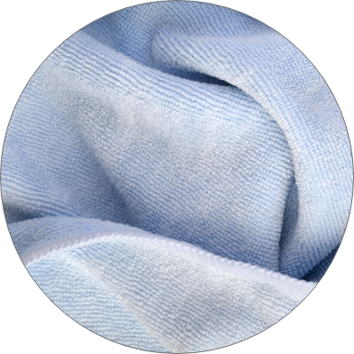
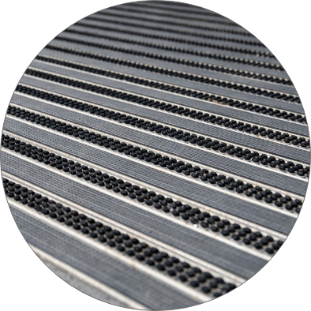
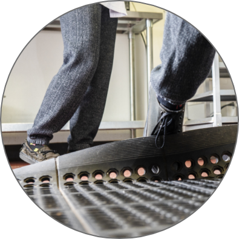
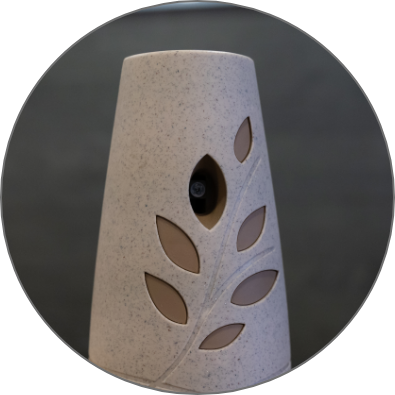
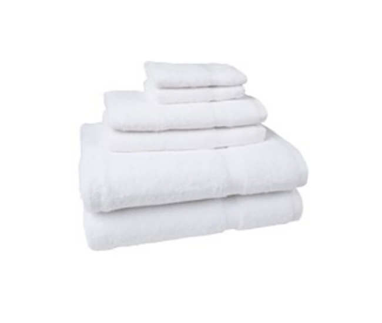

Hospital linens
Bed linens, blankets, and towels on a schedule a facility can plan around.
A smarter way to manage linen, laundry and logistics. Talk to our digital team at Creative Tugs — creativetugs.com Book a meeting

Products and services
No mill and no made-up specifications. These are the programs published on Morgan’s healthcare and hospitality pages.
Healthcare
Bed linens, blankets, and towels on a schedule a facility can plan around.

Gowns, robes, and related patient garments.
Scrubs, lab coats, warm-up jackets, and barrier garments.

Cloths, dusters, and mopping systems.
A named healthcare program, alongside lab coats and the scrub locker.

Floor coverings for entrances, kitchens, and back-of-house paths.
Hospitality

Sheets and towels inside the hotel linen rental program.
Table linens for dining rooms, clubs, and catering.

Front-of-house and kitchen apparel.

Kitchen textiles and operating supplies.

Mats that stay on a replacement cycle instead of a purchase order.

The associated products Morgan already lists with hospitality linen.

College and university programs, published as their own hospitality offer.
Par, replacement, and presentation handled as a service, not a storeroom problem.